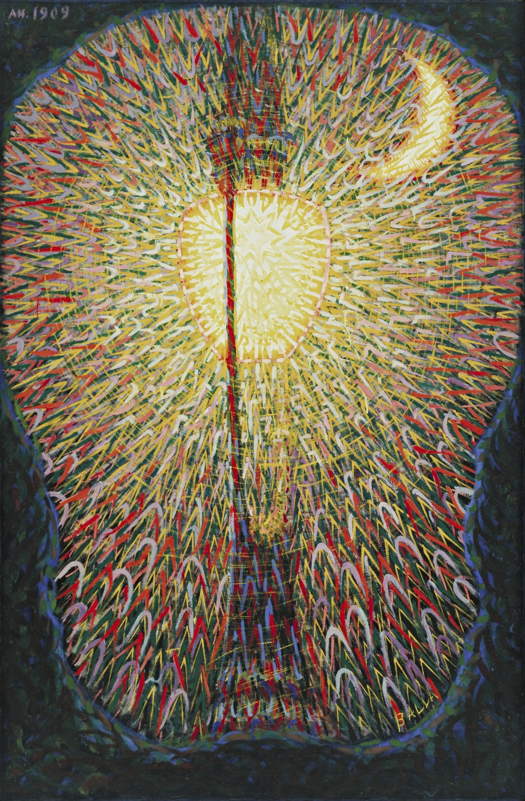
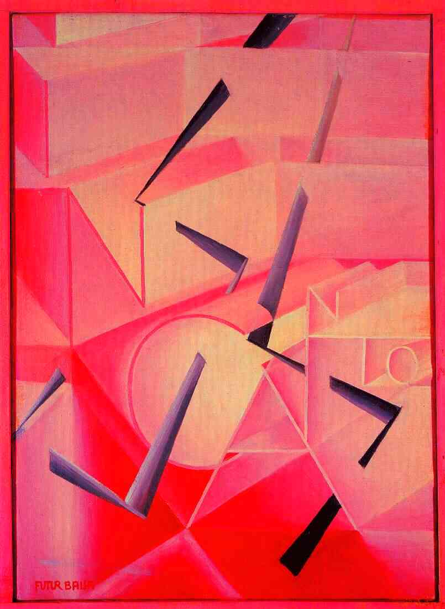

Gallery




(18 July 1871 – 1 March 1958)
He was an Italian painter, art teacher, and poet best known as a key proponent of Futurism.
In his paintings, he depicted light, movement, and speed. He was concerned with expressing movement in his works, but unlike other leading futurists he was not interested in machines or violence with his works tending towards the witty and whimsical.
Here are his paintings called Balla-street-light, Feu d'artifice, The-spell-is-broken, and Mercury Passing Before the Sun. I love the first one the most. I like the color matching and the way he showed the light. It's so pretty！
Gallery